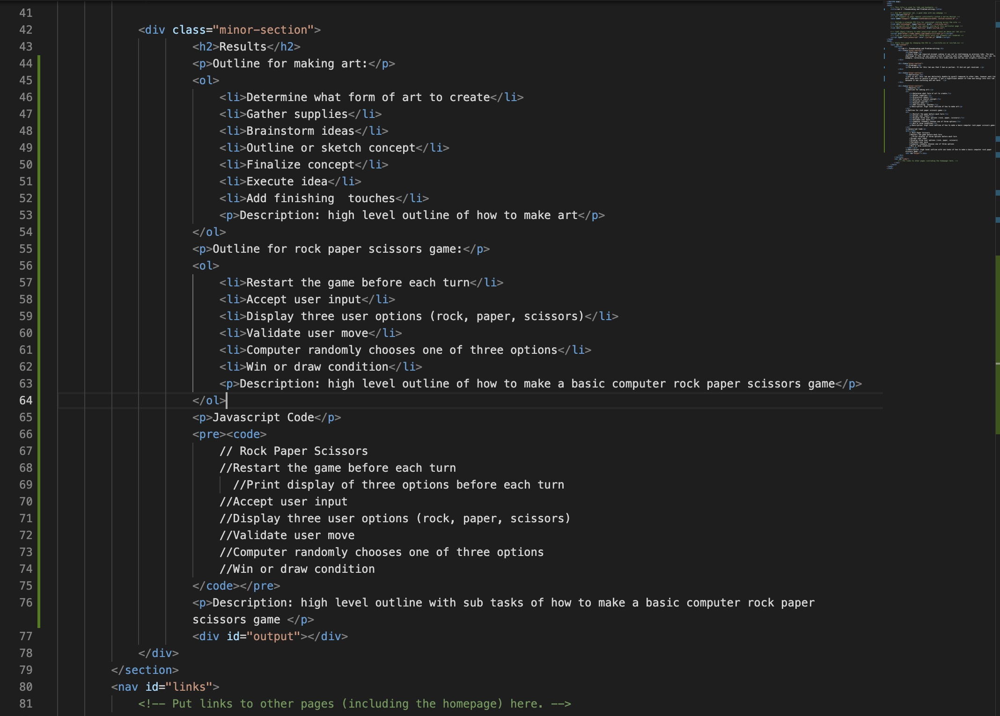

Lab 4 - Pseudocoding and Problem-solving
Challenge
Since this lab required minimal coding it was not as challenging as previous labs. The main challenge of this lab was keeping track of exactly what steps needed to be taken for the lab. For example, reiterating information on this index.html and the doc was slightly confusing.
Problems
The problem for this lab was that I had no partner. It did not get resolved.
Reflection
All in all, this lab was definitely doable by myself compared to other labs, however next time I will make sure to secure a partner. I put a significant amount of time and energy into this lab just because it was confusing and not hard.
Results
Outline for making art:
- Determine what form of art to create
- Gather supplies
- Brainstorm ideas
- Outline or sketch concept
- Finalize concept
- Execute idea
- Add finishing touches
Description: high level outline of how to make art
Outline for rock paper scissors game:
- Restart the game before each turn
- Accept user input
- Display three user options (rock, paper, scissors)
- Validate user move
- Computer randomly chooses one of three options
- Win or draw condition
Description: high level outline of how to make a basic computer rock paper scissors game
Javascript Code
// Rock Paper Scissors
//Restart the game before each turn
//Print display of three options before each turn
//Accept user input
//Display three user options (rock, paper, scissors)
//Validate user move
//Computer randomly chooses one of three options
//Win or draw condition
Description: high level outline with sub tasks of how to make a basic computer rock paper scissors game
index.html of Lab 4 showing pseudocode